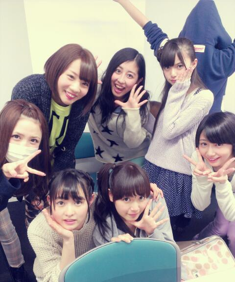
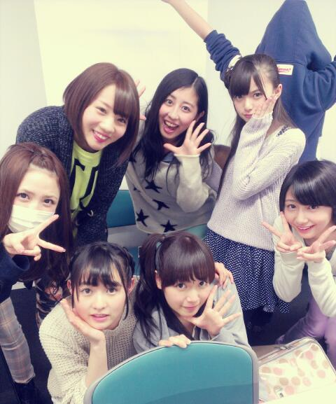

| 2013/04 12 Fri | ひめたん(*>ω<*)そ の284 |
ごめんね(´・ω・｀)お待たせしました！
最近は演技するのが毎日楽しくてもうっ
演技はほんっとに経験がないので
もうー何をするのも新鮮だねー
とってもお勉強になります♪
そんでブログ書きながら寝落ちってのを
数日繰り返しました←
心配しちゃったかなーひめたは元気だよー！
そうそう。今日はおともだちの誕生日だったから
サプライズ企画したんだよ(^^)
門の外でスタンバイしてて、ともだち来た瞬間に
あとからともだちをおいかけて
おいついたとこでみんなで歌って
写真とってかいさーんて感じす☆
コーラにメッセージ書いたんだけどね
飲むたびにペットボトルに黒ペンで書いた
メッセージがでてくるの！
あ、そして今日はまた
個握のお洋服買ってきたよ＼(^^)／
この前おにゃのこひめきゅんさんが
教えてくれたお店で買ったよ＊
詳しくはまた書くねー

シルエットはまあや姫。
最近は演技するのが毎日楽しくてもうっ
演技はほんっとに経験がないので
もうー何をするのも新鮮だねー
とってもお勉強になります♪
そんでブログ書きながら寝落ちってのを
数日繰り返しました←
心配しちゃったかなーひめたは元気だよー！
そうそう。今日はおともだちの誕生日だったから
サプライズ企画したんだよ(^^)
門の外でスタンバイしてて、ともだち来た瞬間に
あとからともだちをおいかけて
おいついたとこでみんなで歌って
写真とってかいさーんて感じす☆
コーラにメッセージ書いたんだけどね
飲むたびにペットボトルに黒ペンで書いた
メッセージがでてくるの！
あ、そして今日はまた
個握のお洋服買ってきたよ＼(^^)／
この前おにゃのこひめきゅんさんが
教えてくれたお店で買ったよ＊
詳しくはまた書くねー

シルエットはまあや姫。

 最近ひめたんが気になる...。←
最近ひめたんが気になる...。←
ひめたんあたしに何かした？笑
何か最近ひめたんに凄く興味があるんですが.
どーすればいいんですか！？笑
まじー？やー逆にーひめたん最近何したのー笑
でもねーとっても嬉しいよー∩^ω^∩
ひめたんビームには中毒性がありますか？
あるかなー保障はできんけど
そうだったら本望です///
ひめたんびーむってどんなの？
ひめたーんびーむ(<・ω・>)
どうすればひめたんの可愛さに
緊張しなくなりますか？
ひめたんごときで緊張してたら
ままに会ったらぱーんなるよ！
ってままがゆってるよ◎笑
今度の京都で初めてひめたんとこに握手しに
行こ思うんやけど緊張しすぎて
爆発しそうなんやけどどうしたらいい？
ば・く・は・つ！
爆発しちゃいかん！
ひめたんのことお友だちとかだと思って
リラックスしてくれていーんだよっ☆
ひめたんはめっちゃ可愛いけど
どーしたらそんなに可愛くなれるの？
えーもっと可愛くなってから答えるー
一緒に頑張ろ(´pωq｀)
ひめたんの写真はひめきゅんさんにはなかなか
当たらない仕様になっているのでしょうか？
なーにーゆーえー笑
ひめたんはそんな細工はしてないわよー
ひめたんの写真でた方は
りあるひめたんだと思って大事にしてね＊
大学生になったら券とるから受験終わるまで
まっててくれる？？ 女子大生きたらどう？？
待ってるよ！応援しながら待ってる！
「女子大生なりました！」ってゆって
来てくれるの待ってるよ∩^ω^∩
ひめたんは目覚まし時計が無くても
起きれる派ですか。
それともあっても起きれない派ですか。
無くても起きれる時のが多いです。
絶対ではないけど、わりと得意よー♪
16さいありがとうー！
(＊´・ω・＊)
コメント(404)
2013/04/12 22:06